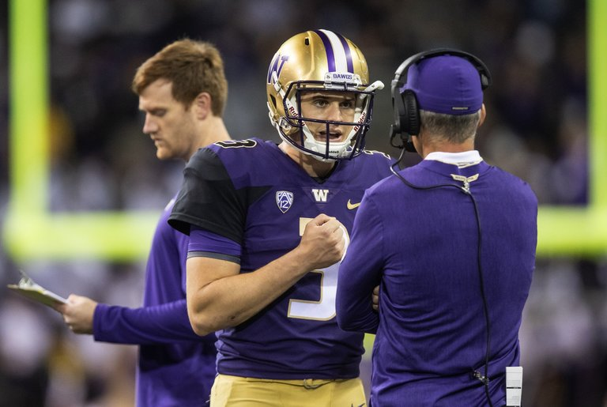

Superscreen B-IMD-X233
Welcome to my new jumbotron. Hope it looks better and more organized. But, like always, feedback is welcome. Anyway, I would like to get you started with a few cards and end with some cool tabs, just to show you the power of Bootstrap! Bootstrap is so magical, like some kind of ancient technology from a powerful long-lost civilization! And to give you a brief demonstartion of its awesome magical powers, I will show you a totally rad looking sports card! I hope you like sports, like when you enjoyed that tailgate party! And I hope you like collecting cards! So to start off, here are your cards!
Bonus questions before showing you the cards: (If you're too impatient to wait for the sports card and the other cards, go ahead and skip. :) ) What is your favorite sport? And what are your favorite athletes? What is your favorite video game? And what game console is your favorite? (If you answered the previous question) What is your favorite video game franchise? And what are your favorite video game characters? Why? What are your favorite flavors of ice cream? Do you like chocolates? If so, what flavors of chocolates do you like? (Spoiler Alert) If you like chocolate, don't worry. I'll have a chocolate card ready for you! :) What are your favorite subjects to study at school? What kinds of books do you like? Anyway, enough questions! So here are your cards! (Thank you if you were patient enought to take the time to read and answer my questions!)Cards:
